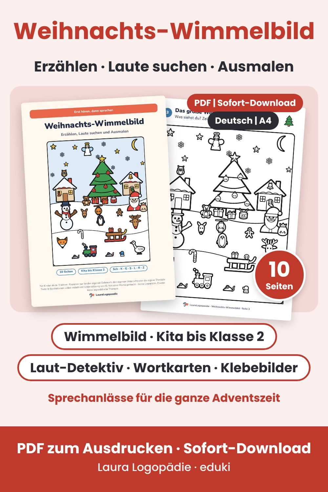

Großes Weihnachts-Wimmelbild voller Sprechanlässe: erzählen, Wörter mit Sch, K, G, S, L, R, Z und T suchen, zählen und ausmalen. Mit Farbversion, Laut-Detektiv, Wortkarten und Klebebildern. 10 Seiten als PDF zum Ausdrucken.
Zum Wimmelbild auf edukiLauraLogopaedie – von einer Mama gemacht, keine Logopädin. Die Materialien ersetzen keine Therapie. Texte und Illustrationen entstehen mit Unterstützung von KI.